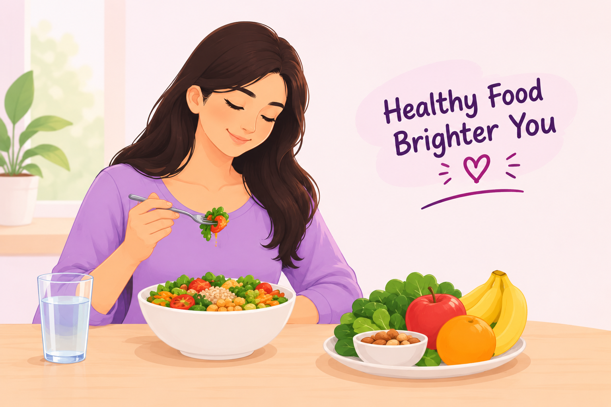

Good Nutrition Matters
Good nutrition helps support energy, growth, immunity and overall health. Women and girls need a balanced diet that provides enough protein, vitamins, minerals, healthy fats, carbohydrates and fluids.
Iron is especially important because iron deficiency can lead to anemia. Eating a varied diet and seeking medical advice when symptoms or concerns occur can help support better health.
🌷 Important Nutrients for Women
🥬 Iron
Iron is needed to make hemoglobin, which helps carry oxygen in the blood. Sources include leafy vegetables, beans, lentils and fortified foods.
🥛 Calcium
Calcium supports healthy bones and teeth. Milk, curd, some fortified foods, tofu and certain leafy vegetables can provide calcium.
🍊 Vitamin C
Vitamin C supports normal body functions and can help improve absorption of iron from plant-based foods.
🥚 Protein
Protein helps the body build and repair tissues. Sources include pulses, beans, dairy products, soy, nuts and seeds.
🌾 Folate
Folate is an important nutrient for normal cell growth. Green vegetables, beans, peas and fortified foods can provide folate.
💧 Water
Adequate fluids help the body maintain normal functions. Water is generally the best choice for everyday hydration.
💗 Healthy Eating: Do & Don't
✅ Do
- Eat a variety of fruits and vegetables.
- Include pulses, beans and other protein-rich foods.
- Include iron-rich foods in your regular diet.
- Choose whole grains and other nutritious foods.
- Drink enough water throughout the day.
- Maintain regular and balanced meals.
- Discuss supplements with a healthcare professional when needed.
❌ Don't
- Do not depend mainly on highly processed or sugary foods.
- Do not skip meals regularly.
- Do not take iron or other supplements without appropriate advice.
- Do not ignore persistent tiredness or weakness.
- Do not follow extreme diets without professional guidance.
- Do not assume every symptom is caused by poor nutrition.
- Do not delay medical evaluation when symptoms are concerning.
🩸 Understanding Anemia
Anemia can occur when the body does not have enough healthy red blood cells or hemoglobin. Iron deficiency is one possible cause, but anemia can have several causes.
Symptoms can include tiredness, weakness, dizziness, shortness of breath or pale skin. These symptoms can also have other causes, so proper medical evaluation is important.
If you have persistent symptoms, very heavy periods, or concerns about anemia, speak with a qualified healthcare professional. They may recommend an examination or blood test when appropriate.